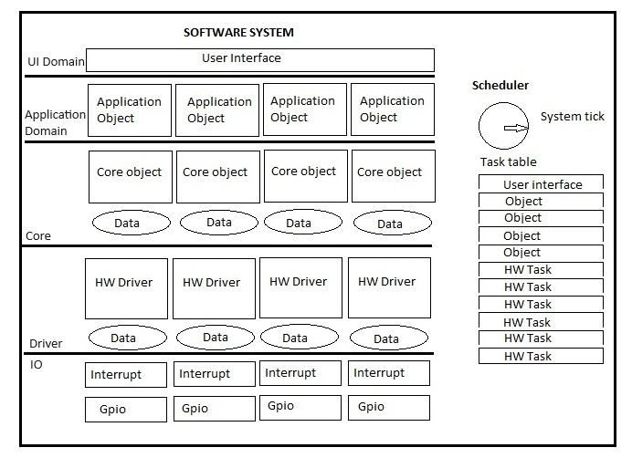

The following is an overview of the design techniques and philosophies I have evolved over time while working
a number of projects from adding features to complete ground up new development. They apply to new features
and products only. It is not advisable to apply them when modifying existing code or fixing bugs. My approach to this
is outlined in my software maintenance description.
Top down design pitfalls
Early on in the field Embedded Software development processors were small and lacked resource. The developers came
from electronics backgrounds. They were typical engineers who approached problem solving with a top-down perspective.
Attempts were made to gleen as much use of memory as possible. This resulted in extensive re-use of RAM and global variables.
Stack size was small and jumps backwards and forwards throughout code was common. This introduced a tendency for 'spaghetti' logic.
Functions were long and cumbersome and served multiple purposes whose side-effects were frequently difficult to characterise.
There was no concept of multiple threads and hence it was not uncommon to add code and find large latencies occurring in the
code that was already there. There was very little concept of layering and often interrupts were heavily overloaded with
unnecessary functionality in order to offset these latencies. Modularity was beginning to be a recognised concept but this only served to
group 'like code' with 'like functionality'. It added readability but the realtime performance was still often compromised.
Bare metal and Round Robin scheduling
Early embedded code was executed in a single loop (round robin) and no thought was given to the realtime priority of
specific tasks. Hence, UI updates occurred within the same timeframe as realtime data processing (often updated via
interrupt functions). In my experience this resulted in the absurd symptom of button presses being processed
too slowly, and their associated sounds and LED updates lagging accordingly. Meanwhile, timers and ADC interrupts were going
unserviced for, what relatively speaking, was millenia.
Modularity and reusability
Modularity was a way of introducing the idea that functions should only perform one task. It meant that it could be
easily recognised and maintained without necessary knowledge of it's clients. This added readability, maintainability and
portability between platforms. It seems obvious but so often I find code today performing more than one duty whose side
effects need to be considered when modifying it. Alongside this concept came another of data encapsulation. Data corruption
was a very common problem. Squeezing data down into the location where it is actually used helped to do away with global
variables. It forced the programmer to think carefully about the data but this was a necessary effort to make. Taking a
'step back' and really considering the purpose of it and considering things such as:
- Who owns it
- If it should retain its value
- If it can be modified
- Where it should be located
- Who has access to it
- What its real purpose is
Idle time and interrupts
Processors should spend 90% of their time
doing nothing. In an event driven system the software should only spring into
action when an interrupt occurs. Striving for this in software designs should be the goal of any architect. When interrupts occur,
they should be short and quick. They should do very little except modify data. This data can be monitored at leisure externally
by a 'loop'. This can involve multiple 'loops' all running at varying priorities and rates depending on the rate of change of their
respective modified data. They also should be as short as possible so as not to take too much processor bandwidth.
An example of a low priority slow task is the updating of a display. An example of a high priority fast task is the reading of a
button press. Both of these are related to the UI but both exist at opposite ends of the software 'stack'.
Software layering and scheduling tasks
A overview of how to structure a basic software architecture can be illustrated in the following block diagram.
It is a very simplistic view and can be expanded on an application by application basis. It is how I approach a software architecture and bring
in other concepts as necessary. It can lend itself to porting an OS if required to allow inter-task messaging and pre-emption.

Each block represents a thread which is executed at a rate determined by the scheduler and its task table. It should be as short as possible.
Generally the higher the block is in the system the slower the rate at which it runs. A high resolution timer is used as a system tick that parses the
table updating the individual task ticks. Each thread should be kept as short as possible so as to allow the execution of the following thread.
Interrupts occur outside the scheduler and update driver data in realtime. This data is then parsed, conditioned and manipulated by the core task
associated with it. This may involve averaging and bounds checking, for example. Once the data is in a usable state, the associated application
accesses it and makes decisions as to how the system should behave. It is here that multiple objects and classes may reside. State machines
exist here and are transitioned by events coming from the interrupt layer and any change in data from the core layer. Any control is exerted
either via HW drivers (e.g. USART, I2C interfaces) or direct GPIO (relays, switches etc).
State machines, events and interrupts
Wherever possible, I am an advocate of state machines for each object. The philosphy is that each object in the software has a direct corresponding
relationship with an object in the 'real world'. Hence its behaviour should match the behaviour of the 'real world' object. I avoid using 'flags'
at all costs as the need to add a flag is an indication that there is actually another state that hasn't been implemented.
The state machine should only change state when an event occurs, otherwise it should be doing nothing (ref. 'Idle time and interrupts' above).
These events should be generated either directly or indirectly via interrupt or change of state of a neighbouring task. I dislike and avoid polling
of any kind as this creates a processor overhead that (as mentioned) 90% of the time results in nothing happening.
Objects and the real world
A software architecture is made of multiple domains. A precursor to designing should be a domain analysis. In the diagram above we can see that the
user interface block can consitute a domain which we can analyse. Within it we may observe that it can comprise real world objects such as button(s),
display(s), sound(s). Each of these can can have their own states. Below these objects can be core objects which hold data related to these objects.
A way to think of these is to attempt to restrict any concept of the data from knowledge of the object they supply. For example, a button will have
states of 'pressed', 'released', 'toggled', 'long press'. The core object will hold the values of the button state in units such as voltage or current.
Timing functions can reside inside these core objects to determine the events to pass to the UI object. They can perform debouncing, thresholds
and sample history. Below these are the driver objects. These are specific to the hardware platform being used. They have knowledge of the IO to sample.
They have knowledge of the interrupts to configure and respond to. When interrupts occur, the hardware drivers process the interrupt and read any
data provided. For example, an ADC interrupt trigger can signal to the driver that a reading is available to be sampled and made available to the core
object. These too have state machines. Scheduling, performing and storing valid driver reads all have accompanying states. They can be as straightforward
as ADC priming and triggering to the scheduling of data into and out of an I2C port. Any peripheral which has a temporal component to its access requires a
a state machine to drive it and interrupts to be used for state transition events.
State machine example
State machines can be implemented in several ways. My preferred method is by jump table. Each state action contains its own local data and requires
no input parameters. Each event processed results in a different state action depending on the current state. The table is parsed on event reception
and matches the event and current state to determine next state. An alternative is to provide switch statements that recieve events and process them
directly but this is difficult to follow and can result in bloating of code and missing transitions. Using a jump table allows easy visualisation of
the transitions and mimics a traditional state transition table. There is a small 'time' overhead in the parsing however.
A common driver application is the sending and receiving of data via USART.
As the following diagram illustrates,
a state machine is implemented that schedules data into a tansmitter buffer and processes receive bytes as the USART interrupt occurs.
This is usually the first stage I perform in a new software development. It allows serial port access to the system in lieu of the full application and
associated user interface. It can be used to create a command line interface. This can then be used as a precursor to interacting directly
with internal registers, peripherals and gpio which are associated with a new system. It can then evolve to interact with other layers and applications.
Data can be fed into and out of it via a testmode application. This application can be added to as firmware
development progresses. It can be used to access the core objects to stimulate code paths that would otherwise require real world inputs. Hence it
lends itself to being used for automated test. Scripts can be written that bypass normal program flow to exercise various of the applications which would
otherwise take time if done manually. Caution should be used when interacting with lower layers of the software however. Implementing a 'test mode'
operation is advised in this case. Certain tasks can be switched on and off in this mode.